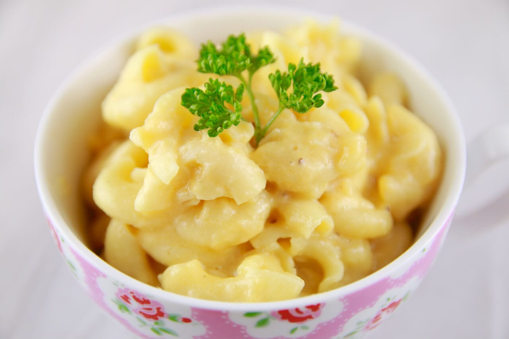

Simple Macaroni and Cheese

Description
Macaroni and cheese- also called mac and cheese in the United States and macaroni cheese in the
United Kingdom- is a dish of cooked macaroni pasta and cheese sauce, most commonly cheddar. It can
incorporate other ingredients such as breadcrumbs or meat.
Traditional macaroni and cheese is a casserole baked in the oven; however, it may be prepared ina sauce
pan on the top of the stove or using a packaged mix.
Ingredients
- 1 (8 ounce) box elbow macaroni.
- ¼ cup butter.
- ¼ cup all-purpose flour.
- ½ teaspoon salt.
- Ground black pepper to taste.
- 2 cups milk.
- 2 cups shredded Cheddar cheese.
Steps
- Bring a large pot of lightly salted water to a boil. Cook elbow macaroni in the boiling water,
stirring occasionally until cooked through but firm to the bite, 8 minutes.
- At the same time, melt butter in a saucepan over medium heat.
Add flour, salt, and pepper and stir until smooth, about 5 minutes.
-
Pour in milk slowly, while stirring continuously. Continue to cook and stir until mixture is smooth and bubbling,
about 5 minutes, making sure the milk doesn't burn.
-
Add Cheddar cheese and stir until melted, 2 to 4 minutes.
-
Drain macaroni and fold into cheese sauce until coated.
Back to main page